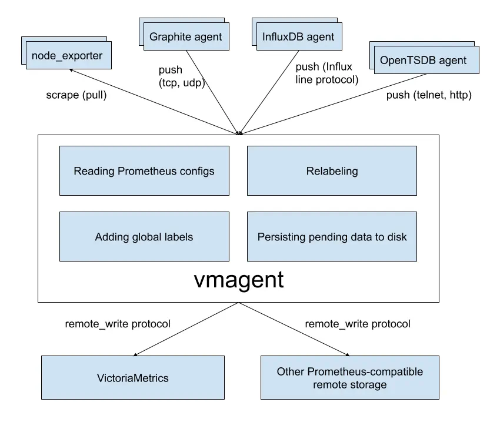

Pre-setting
Installing packages Let’s make sure some packages are available:
tar - to unpack the archive with the binary.
wget - to download the archive.
curl - to execute queries to test the system.
Depending on the Linux distribution, the installation will be slightly different.
for DEB-based systems (Astra Linux / Debian / Ubuntu):
apt install tar wget curl
for RPM-based systems (RED OS / Rocky Linux / CentOS):
yum install tar wget curl
Firewall
By default, VictoriaMetrics listens for requests on port 8428. To communicate with it over the network, we need to open the appropriate TCP port. Our actions will differ depending on the firewall management utility we are using.
Iptables (typically for DEB-based systems):
iptables -I INPUT -p tcp --dport 8428 -j ACCEPT
We use iptables-persistent to save the rule:
apt install iptables-persistent
netfilter-persistent save
Firewalld (typically for RPM-based systems):
firewall-cmd --permanent --add-port=8428/tcp
firewall-cmd --reload
Installing and running VictoriaMetrics
loading the binary and studying its startup parameters
or
wget https://github.com/VictoriaMetrics/VictoriaMetrics/releases/download/v1.95.1/victoria-metrics-linux-amd64-v1.95.1.tar.gz
Let’s unpack the downloaded archive:
tar zxf victoria-metrics-linux-amd64-*.tar.gz -C /usr/local/bin/
This command breaks down as follows:
-x: Extract
-z: Use gzip compression
-v: Verbose mode (show the progress)
-f: Specify the file to extract
You can run the command to examine all the application startup parameters:
victoria-metrics-prod -help | less
We will use:
storageDataPath - the path to the data storage directory.
retentionPeriod - period in months, after which the data will be removed from the database.
Creating and configuring the systemd unit
In our example we will create an autorun with the following nuances:
The service will be started from a separate user to maximize security.
We will store the data in the /var/lib/victoriametrics directory.
Create a service user victoriametrics:
useradd -r -c 'VictoriaMetrics TSDB Service' victoriametrics
We also create directories for store data and process identifier
mkdir -p /var/lib/victoriametrics /run/victoriametrics
Let’s set our new user as the owner for the created directories
chown victoriametrics:victoriametrics /var/lib/victoriametrics /run/victoriametrics
Now let’s create a unit file:
nano /etc/systemd/system/victoriametrics.service
[Unit]
Description=VictoriaMetrics
After=network.target
[Service]
Type=simple
User=victoriametrics
PIDFile=/run/victoriametrics/victoriametrics.pid
ExecStart=/usr/local/bin/victoria-metrics-prod -storageDataPath /var/lib/victoriametrics -retentionPeriod 12
ExecStop=/bin/kill -s SIGTERM $MAINPID
StartLimitBurst=5
StartLimitInterval=0
Restart=on-failure
RestartSec=1
[Install]
WantedBy=multi-user.target
* in this example we will store the files in the /var/lib/victoriametrics directory, as we said above. The data storage period is 1 year.
Rereading the systemd configuration:
systemctl daemon-reload
Allow the unit to autostart and start it:
systemctl enable victoriametrics --now
Allow the unit to start and start it: By default, VictoriaMetrics listens on port 8428. We can make a request using curl:
curl 127.0.0.1:8428
VictoriaMetrics is installed and working.
Storing Prometheus metrics in VictoriaMetrics
Let’s check the availability of VictoriaMetrics:
curl 192.168.0.15:8428
- where 192.168.0.15 is the address of the VictoriaMetrics server.
We should get a page with links that are located next to the service after it is installed.
open the Prometheus configuration file:
nano/etc/prometheus/prometheus.yml
add to global
global:
external_labels:
server_name: prometheus0
- the
external_labelsoption allows us to add a tag that will let us know that specific metrics came from a specific Prometheus server.
And add option:
remote_write:
- url: http://192.168.0.15:8428/api/v1/write
queue_config:
max_samples_per_send: 10000
capacity: 20000
max_shards: 30
And add
url - address of VictoriaMetrics server, where will be duplicated.
max_samples_per_send - the maximum number of metrics that can be sent at one time.
capacity - determines how many samples are queued in memory for each segment before reading from the WAL is blocked. Once the WAL is locked, no samples can be added to any shards and all bandwidth will cease.
max_shards - the maximum number of segments Prometheus will use for each remote write queue.
and restart prometheus
systemctl restart prometheus
we can access the VictoriaMetrics web interface at http://192.168.0.15:8428/vmui/, where 192.168.0.15 is the address of server. We can enter any PromQL query in the Query 1 field,
node_memory_MemTotal_bytes{server_name="prometheus01"}
- where
server_name="prometheus01"is the tag and its value that we specified in the prometheus settings.
This query should return values to us. This means that the data gets from Prometheus to VictoriaMetrics.
Customizing Grafana
Adding data source
Go to the web interface of the graphana. Go to Configuration - Data sources:
[Add Data Source]
Select Prometheus as the source:
Specify the name of the source and the URL address where the VictoriaMetrics service is available:
HTTP
URL http://192.168.0.15:8428
Allowed cookies
Timeout
Save the settings.
Visualization of metrics by VictoriaMetrics itself
VictoriaMetrics’ own metrics are available at http://:8428/metrics. We need to exportera this address to Prometheus, which passes the data back to VictoriaMetrics. We can then visualize the information using the datasource added above.
Open the Prometheus configuration file:
nano /etc/prometheus/prometheus.yml
- job_name: 'node_exporter_clients'
...
static_configs:
- targets:
...
- 192.168.0.15:8428
Now it is possible to customize Grafana. On the official website we can read about VictoriaMetrics dashboard and also get an identifier to install it.
In Grafana go to Dashboards - Import:
Enter the dashboard identifier for VictoriaMetrics. It’s 10229:
import via grafana.com
10229
In the next step, you can simply click Import
Done. We can move on to the dashboard
Vmagent
vmagent is an agent designed for collecting and sending time series data to the central data store in VictoriaMetrics.
Data Collection: vmagent can be configured to collect time series data from various sources, such as Prometheus, InfluxDB, and others.
Data Conversion: It can convert data from different formats into a format understandable by VictoriaMetrics.
Data Sending: vmagent sends the collected data to the central VictoriaMetrics data store for subsequent analysis and visualization.
Data Aggregation: vmagent can perform pre-aggregation of data before sending it to the data store. This can help reduce the data volume and lower the network load.
Scalability and High Performance: VictoriaMetrics and its components, including vmagent, provide high performance and scalability for efficient handling of large volumes of time series data.

tar -zxvf vmutils-linux-arm64-v1.95.1.tar.gz
cd vmutils-linux-arm64-v1.95.1
./vmagent -storageDataPath=<were storage db>
scrape_configs:
- job_name: node_exporter
consul_sd_configs:
- server: 'localhost:9100'
Prometheus + Consul
mkdir ./configs.d
run in dev mode
consul agent -dev
consul run in port 8500
exporter1.json
{
"service": {
"name": exporter0",
"tags": [
"exporter0",
"test",
],
"port": 9100
}
}
consul agent -dev -enable-script-checks -config-dir=./configs.d
other machine create node exporter
cd prom/node_exporter-1.3.1.linux-amd64/
./node_exporter
in directory prometheus and edit
nano prometheus.yml
scrape_configs:
- job_name: consul
consul_cd_configs:
- server: localhost:8500
tags: [test]
./prometheus
status => tagrets and see target
USE:
Utilisation
avg by (instance,mode)(irate(node_cpu_seconds_total{mode!=‘indle’}[1m]))
Saturation
node_load*
Errors {job=“somejob”} |= “error”
rate(http_requests_total{status_code=~“5.*”}[5m])
RED:
Rate
rate(request_count[5m])
Errors
Loki + 5** ( for example)
Duration
rate(http_request_duration_seconds_sum[5m]) / rate(http_request_duration_seconds_count[5m])